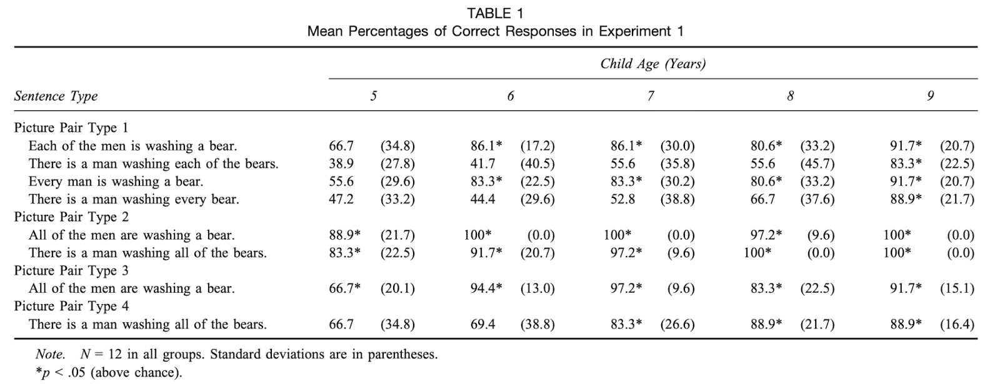

Final Paper LM¶
Tips¶
- Identify a Research Question that links with previous research
- Identify a Method that will let you answer the research question, or at least partially
- Develop an experiment (or two) that would then test this research question
- Predict what the results will look like given current theory/theories
If your experiment tests the predictions of more than one theory then you should have one set of predictions for each theory - What are the consequences of certain results for our understanding of the phenomena studied?
- What should following research do given certain results?
- How will you analyze the results statistically? What methods, which tests, what does your data look like?
- So write a 2-3 page paper about an experiment that would answer an open question about quantification.
- This paper can be written as if you are proposing it (e.g. "We would then test x children with …." ) or you could write it as if you already did the experiment, imagining the results, e.g. "We tested 30 Spanish speakers …".
- Give it the kind of title you would give to a paper. (Don't call it "My Gedankenexperiment" !;)).
- Give an introduction to the research area, summarize the results you already know, using references to relevant papers. This could be the background section. Explain what's still missing in our knowledge and how we should test it.
- In the methods section I need to know the details of the experimental design, including examples of sentences that will be tested and pictures that might be used (use clip art, or I also don't mind simple drawings. Don't worry if you are not very artistic!).
- Explain what kind of participants you will need to test, how many, and what features they need to have. Be realistic. Just because it's fantasy, you shouldn't propose testing 1000 children.
- Do you also want to do additional testing? (working memory, inhibition?) Make sure you motivate it.
Idea.¶
- Shortcuts to Quantifier Interpretation in Children and Adults But studies and comparisons were weird. Change?
- They were salty about This feature of their design provided children with unambiguous cues as to which set of entities was the focus of attention. : Crain and Thornton (1998)
- Crain et al.’s (1996) claim that preschoolers have full competence with uni- versal quantifiers would seem to be undermined by the fact that even older school-age children make errors identifyi- 04:40 ng the domain of a universal quantifier.

- Brooks and Braine (1996, Experiment 1) tested adults with actional scenes and found no errors. Their data, however, came from 10 undergraduates at a highly selective private university (Carnegie Mellon) and thus may not be representative of adults in general.
- Test same thing as Shorts. but different data
- Pictures
Abstract¶
- Ostensive cues
- Locative bias
- Mouse tracking
Participants¶
- We recruited and tested twelve 5-year-olds (M = 5;5, range = 5;2–5;11), twelve 6-year-olds (M = 6;6, range = 6;2–6;10), twelve 7-yearolds (M = 7;6, range = 7;1–7;11), twelve 8-year-olds (M = 8;6, range = 8;0–8;11), and twelve 9-year-olds (M = 9;6, range = 9;1–9;11), twelve adults at private elementary schools and after-school programs in Atlanta, Georgia.
- adults from RUG, kiddos from some school
Procedure¶
- single, 20-min session conducted in a quiet room of their school
- We showed children two pictures at a time and asked them to point to the picture that went best with a sentence read aloud
- After the child looked at both pictures, the experimenter read the corresponding sentence and asked the child to point to the picture that went best with the sentence.
- Same for adults (Contrary to this paper itself)
- the teddy thing was nice and cute too
Experimental Design¶
- 16 test items
- 2x2 study (Picture: Collective vs. Distributive) and Sentence: (With marker ("each" or "together") or without)
- 2 practice trials
- 7 controls
- 3 fillers
What Do We Expect¶
- Both children and adults make errors
- Only 9 y/o were consistent
- 7 y/o : extra animals/objects vs containers
- Better performance :
- Quantifier modifying the containers vs subject (Disprove Kang et al.)
- Children , Not Adults
- Prefer locative scenes with all filled containers (Drozd et al.)
- Children , Not Adults
- The rate of rejection of the sentences as true descriptions of the visually represented situations significantly correlated with the type of the visual representation.
- The sentence– drawing pairs were rejected in 10.53% of the cases.
- n the case of the sentence–photo pairs, the rate of rejection was a mere 3.51%.
- Just as in Pintér's (2016) experiment, the rate of rejection (i.e., the rate of the exhaustive interpretation of the sentences) was slightly even higher in the adult control group: 13.33% in the case of sentence–drawing pairs, and 8.88% in the case of sentence–photo p
- Crucially, the photos contained many more extra agents and extra objects than the drawings, still they elicited significantly less rejections.
- What made the presence of extra objects in the drawings ostensive was the minimality of the drawings, suggesting that everything irrelevant had been eliminated from them.
- This suggests that the problem does not reside in the child's syntax, given the similarities in sentence structures used across studies, but in
- stead has to do with the difficulty of selecting the appropriate set of entities and avoiding distraction by salient objects.
- Taken together, the experiments suggest that it was the collective scenes as opposed to the use of all that improved children's performance in Experiment 1. Collective scenes were easier presumably because the group depiction aided the child in isolating one set of entities relative to the other
- We suspect that both children and adults make errors in comprehension because they engage in shallow processing that causes inaccurate mapping between syntactic and semantic representations.
- Shallow processing also provides a straightforward explanation of the errors made by adults in Experiment 3. Their high error rates suggest that adult listeners often do not tax their limited information-processing capacities by conducting exhaustive syntactic analyses of sentences but rather make use of simpler strategies in generating reasonable guesses
Literature¶
- Quantifier spreading children misled by ostensive cues
- Shortcuts to Quantifier Interpretation in Children and Adults
- A matter of ambiguity? Using eye movements to examine collective vs. distributive interpretations of plural sets
Experiment¶
- Replace doodles with images , Use more
- Combine locative bias fix + old version of exp
- Mouse tracking
Sentences¶
- Each of the (people) is (verb)ing an (object), for example, Each of the men is washing a bear.
- There is a (person) (verb)ing each of the (objects), for example, There is a man washing each of the bears.
- Every (person) is (verb)ing an (object), for example, Every man is washing a bear.
- There is a (person) (verb)ing every (object), for example, There is a man washing every bear.
- All of the (people) are (verb)ing an (object), for example, All of the men are washing a bear.
- There is a (person) (verb)ing all of the (objects), for example, There is a man washing all of the bears.
- All of the (objects) are in a (container), for example, All of the alligators are in a bathtub.
- All of the (containers) have an (object) in them, for example, All of the bathtubs have an alligator in them.
- There is an (object) in all of the (containers), for example, There is an alligator in all of the bathtubs.
- Each of the (objects) is in a (container), for example, Each of the alligators is in a bathtub.
- Each of the (containers) has an (object) in it, for example, Each of the bathtubs has an alligator in it.
- There is an (object) in each of the (containers), for example, There is an alligator in each of the bathtubs.
- Every (object) is in a (container), for example, Every alligator is in a bathtub.
- Every (container) has an (object) in it, for example, Every bathtub has an alligator in it.
- There is an (object) in every (container), for example, There is an alligator in every bathtub.